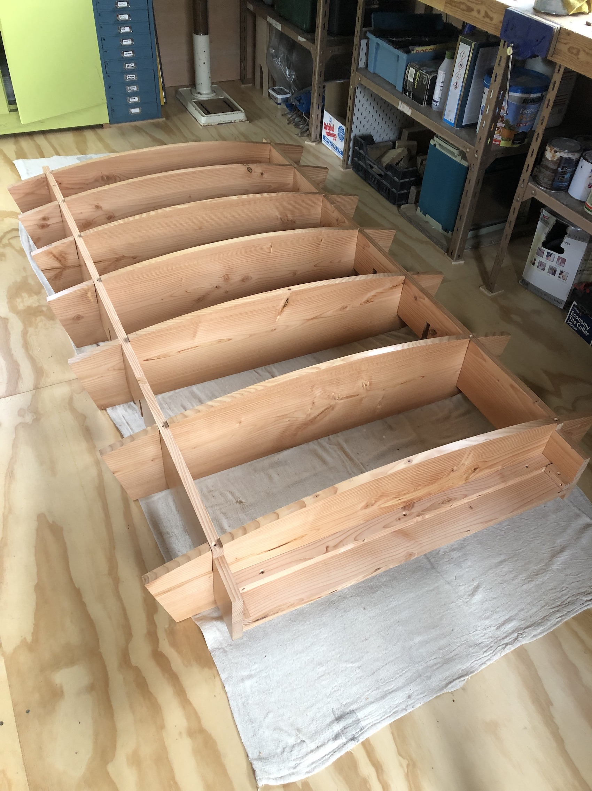
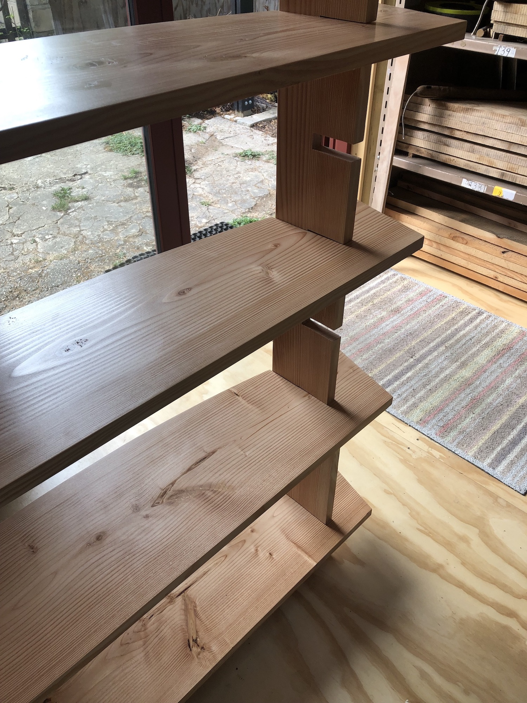
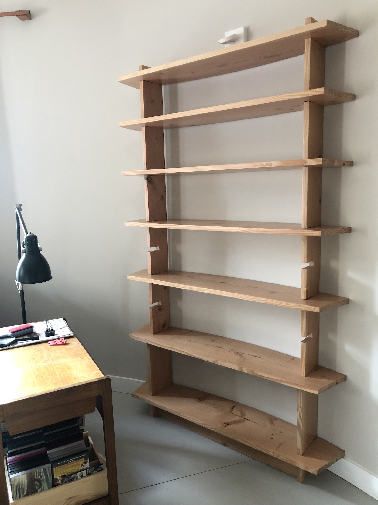
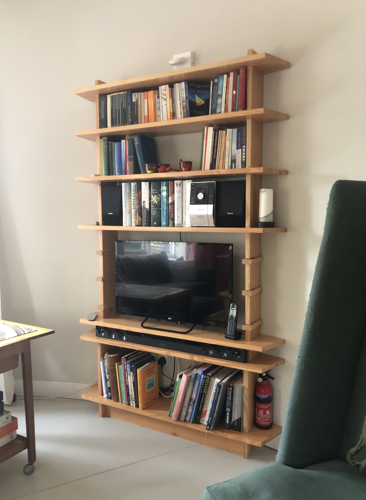

The first bookshelves I have purpose made for the curved oast house walls. These needed to be simple and robust looking enough to fit in with our oast house interior. They also needed to be part adjustable and strong enough to support at least some of our ever growing collection of books. The shelves and uprights are made from wide (300mm) planks of Sweet Chestnut with interlocking joints and a minimum of fixings, finished in water based varnish and furniture polish to keep the tone of the wood light and the beautiful grain strong.



